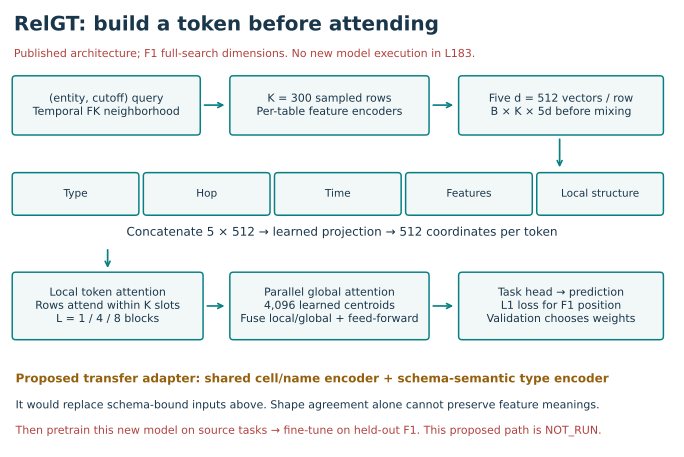
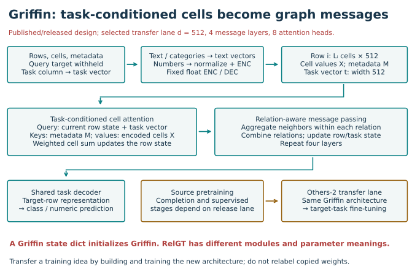
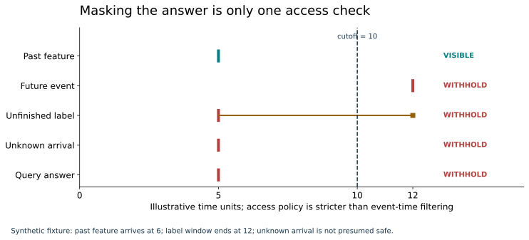
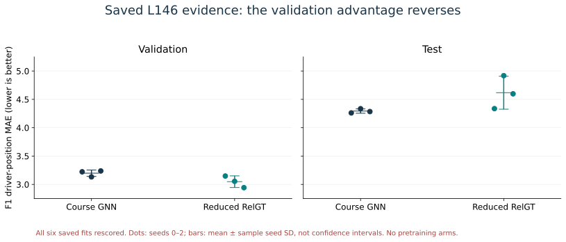
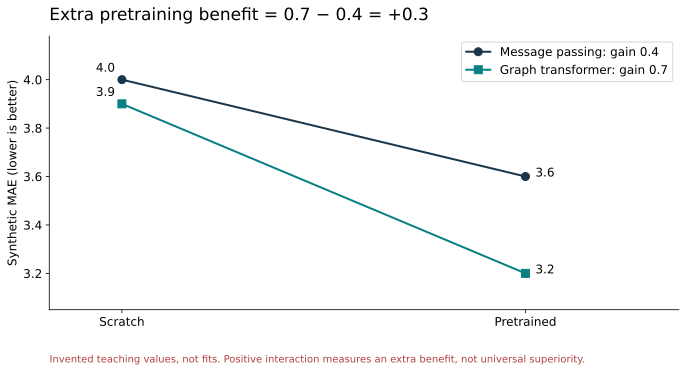

Year 5 · Quarter 3 · Research gap 183
Graph-Transformer + pre-training
Your win: turn “combine RelGT and Griffin” into a claim that an experiment could disprove. Trace the inputs that must change, calculate the missing comparison, and write a one-page gap brief. The core reading takes about 15 minutes; use a separate session for the notebook.
Author evidence: all 7,554 saved predictions replayed; four live audit contracts checked. Full published experiments remain INCOMPLETE. Fresh model inference, training and hybrid pretraining: NOT_RUN. Cloud/API spend: $0. Learner: PENDING_WRITTEN_DEFENSE.
Student notebook · Executed solution · Solution download · Quick reference · Full reproduction contract.
1 · The next question is about learning before the target task¶
Lesson 145 introduced RelGT's graph tokens. Lesson 146 compared a reduced RelGT with a course GNN. Lesson 164 examined Griffin's pretrained initialization. We now ask whether pretraining changes the relative value of these backbones. A backbone is the central network that transforms encoded inputs into representations used for prediction.
Pretraining fits weights on source tasks before the target task. Fine-tuning updates those weights using target-task training labels. A scratch control starts from random weights. These are different starting conditions for training, not different names for inference.
This advances our mission: an architecture idea becomes useful when we can explain its mechanism and test its incremental value. Lesson 182 practices architecture-combination hypotheses. Here we focus on the extra effect of pretraining; no earlier hypothesis is assumed to have succeeded. Earlier practical exits and learner mastery remain unchanged.
2 · First narrow the gap¶
A tempting claim is “relational graph transformers have never been pretrained.” Do not use it. The authors' research overview already connects this architecture family to KumoRFM. A search that finds no exact combination also cannot establish novelty. Primary research overview
Our narrower question is: with a shared input interface and matched target supervision, does source pretraining benefit a RelGT-style backbone more than a message-passing backbone? This is a proposed experiment. We have not established that it is a novel research contribution.
In plain terms. Compare what each model gains from prior practice. Comparing two already different systems once cannot tell you why one wins.
Read RelGT §3 alongside Griffin §3. Read for interfaces: what enters each block, which parameters depend on the schema, and what a prediction means. A schema specifies tables, columns and their relationships.
3 · Model architecture: what would actually transfer?¶
RelGT: five descriptions of each row¶
A query contains an entity and a cutoff time. A foreign key links one table's row to another table's entity. Sampling follows those links to collect a bounded neighborhood. Each row receives five descriptions: its features, table type, hop distance from the query, relative time, and local graph structure. A hop is one traversed link. Structural encoding uses a small GNN on the sampled graph.
The release encodes each description into a vector, concatenates them, and projects the concatenation to the model width. Attention computes weighted combinations of representations. RelGT combines local token attention with a global branch attending to learned centroids; centroids summarize patterns rather than representing every database row explicitly. The head maps a representation to a task prediction. Paper §3, retained implementation.
Read the operations. An embedding is a vector of learned or encoded numbers. Concatenation places vectors side by side; projection mixes their coordinates into a chosen width. A GNN (graph neural network) updates a row vector using linked rows. Attention compares query and key vectors, turns their scores into weights that sum to one, then combines value vectors. These attention queries are internal vectors, distinct from the database prediction query.


The interface problem. The released feature encoders are allocated per table, and table types have indexed embeddings. On a new schema, index 0 might mean a patient rather than a driver. Matching a vector's width does not preserve its meaning. A transferable variant needs a defined shared cell/name encoder and a schema-semantic replacement for table IDs. That is new engineering, not a proven consequence of tokenization.
Worked example. Suppose a frozen type registry uses drivers = 0 and races = 1. A new registry reverses those IDs. Looking up driver ID 1 now returns the old race vector. Both vectors still have the right width. Aligning existing names can fix this permutation; handling an unseen patient table needs an additional semantic rule. The notebook checks this small counterexample explicitly.
Griffin: ask the cells a task-specific question¶
Griffin encodes cells and metadata into a common space. Metadata includes column names and relation descriptions. The target column supplies a task representation. Task-conditioned cross-attention selects information from each row's cells; message passing exchanges information along graph relations. Its shared decoder converts the target-row representation into an answer. The paper distinguishes fixed numerical encoder/decoder components from the learned relational model. Griffin §§3.1–3.3, released model.
Read the conditioning. Cross-attention forms its query from the current row state and target-task representation. Its keys describe column metadata; its values encode the cells. Thus the same row can be summarized differently for different target columns. A shared decoder reuses the same learned output rule across those tasks.


A training recipe is not a checkpoint adapter. A checkpoint is a collection of learned parameter tensors. Griffin and RelGT have different modules and parameter meanings. Loading Griffin weights into a RelGT-shaped network is not the proposed experiment. We would build the new shared-interface model, pretrain its own parameters, and compare it with its own scratch control. The released Griffin code also contains operations beyond the compact paper equations; the notebook retains both the visible model and original trainer.
Risks to name: incompatible schema semantics, different cell-versus-row representations, task loss weighting, negative transfer, temporal contamination, and higher compute. Negative transfer means the pretrained initialization makes the target result worse than scratch under the declared protocol.
4 · Withhold unavailable information, not just the query answer¶
Masking replaces a target value with an unavailable marker. It does not remove future neighbor rows, late-arriving features or labels whose outcome windows have not finished.
Worked example. At cutoff 10, a feature from time 5 arriving at time 6 is visible. A label anchored at 5 whose window ends at 12 is unavailable. A future event at 12 fails our strict event-time rule even if someone published its schedule at 6. Unknown arrival time also fails this strict admission rule; that is missing evidence, not proof of leakage.


Your first notebook function implements this policy. It requires known event and arrival times no later than the cutoff, completed label windows, and a withheld query target. The fixture uses invented time units. It is stricter than some source protocols and is not a correction silently applied to a paper result.
Real inherited warning. L145's saved audit reports 569,502 future-token occurrences in training and 21,368 in validation. L183 authenticates that report and checks a saved violating witness. It does not rescan the full token cache. Fixing the context construction creates a separately declared experiment. Original reproduction contract.
5 · What the existing evidence does—and does not—answer¶
The lab replays all six L146 course fits: two backbones × three seeds, each with 499 validation and 760 test predictions. It joins predictions by (entity, cutoff), verifies saved target values, checks complete ten-epoch histories and validation-selected epochs, and independently recomputes mean absolute error. MAE is the average absolute distance between prediction and target; lower is better.
| Saved course arm | Validation MAE, mean ± seed SD | Test MAE, mean ± seed SD |
|---|---|---|
| Course GNN | 3.197652 ± 0.056532 | 4.293632 ± 0.037816 |
| Reduced RelGT | 3.048312 ± 0.102734 | 4.617536 ± 0.291141 |


These runs used full query populations but reduced course architectures and a ten-epoch recipe. The GNN has lower test MAE in all three seed pairs; RelGT has lower validation MAE in all three. Equal seed labels do not create identical initial weights. Differences in encoders, readout and compute remain. This compares complete designs under a common recipe, not the isolated effect of attention.
Scope check. The 7,554 predictions are saved evidence, freshly rescored. No new weights or predictions are produced. Raw labels are matched to the saved preparation, not reconstructed from database SQL again. Neither arm was pretrained. This comparison cannot estimate a pretraining benefit, and its already-seen test population is exploratory evidence. L146 protocol.
6 · The missing experiment has four arms¶
A factorial experiment varies two factors together. Here they are backbone (message passing or graph transformer) and initialization (scratch or pretrained). All four combinations are needed to ask whether the benefit of pretraining depends on the backbone.
Worked example — invented values. Message-passing MAE falls from 4.0 to 3.6: gain 0.4. Transformer MAE falls from 3.9 to 3.2: gain 0.7. The extra benefit is 0.7 − 0.4 = +0.3. This difference of gains is the interaction. For a higher-is-better metric such as AUROC, calculate each gain as pretrained minus scratch instead.


A positive interaction does not require the pretrained transformer to be the best model. It could improve more from a much worse starting point. Conversely, a transformer can win both comparisons while gaining exactly as much from pretraining as message passing. Keep the absolute scores alongside the contrast.
A concrete probe brief, awaiting a separate execution protocol¶
Use rel-f1/driver-dnf as a single-database feasibility probe, with 512 and 4,096 target labels, subset seeds 42–46, and all 566 validation / 702 test queries in the pinned Griffin release. Four arms × two label budgets × five seed blocks gives 40 target fits. The pretrained arms require their own source-training runs; those costs cannot disappear from the budget.
The initial source-task candidate is the pinned release's Others-2 group: Airbnb destination, three trial tasks, TalkingData demographic prediction, and Telstra severity. Authenticate its exact data and exclude all F1 rows, edges, labels and fitted statistics from every source-training stage before use. It is a candidate corpus, not a newly audited pretraining lineage. Fix shared input semantics, decoder, loss weighting, permissible neighborhoods, parameter budget and selection policy before running. Initialize source training independently for each backbone; do not copy Griffin weights into RelGT. Match target subsets and validation policy across all four arms. Document both training-example exposure and compute—equal epochs alone do not equalize them.
Primary contrast: extra pretraining gain in target AUROC, computed within each seed block and label budget. Falsification: nonpositive transformer pretraining gain undermines the transfer-benefit claim; nonpositive interaction undermines the extra-benefit claim. Report every arm and seed, including failures. With only one target database, a positive result justifies a later study holding out entire databases; it does not demonstrate general cross-database superiority. Paired seed spread is not uncertainty over databases.
Scope check. Source schedule, adapter implementation, corpus availability, selection details and an all-in cost bound still need to be frozen and approved. This brief is not an executable training protocol. All 40 proposed fits and new source pretraining are NOT_RUN. The runnable notebook verifies the design's evidence contracts and arithmetic.
7 · Keep the full published experiments intact¶
| Named experiment | Retained complete scope | Current boundary |
|---|---|---|
| RelGT v1, F1 driver-position, Tables 1/6 | Nine depth/dropout configurations; 100 epochs each; original width, context and training recipe | Temporal gate fails; inherited shallow-speed forecast $80.41 before final evaluation/overhead |
| Griffin v1, Table 12, Others-2 → F1 driver-dnf | Two initialization arms × two label budgets × five subset seeds; full source schedule and evaluation | Inherited conservative forecast $63.89 adjusted compute; 20 full fits unrun |
| L146 course comparison | Six saved fits; all 7,554 held-out predictions | Complete saved-prediction replay; no pretraining comparison |
| Proposed hybrid | Four-arm probe above | New architecture and source pretraining NOT_RUN |
The $10 lesson ceiling includes preparation, retries and validation. L183 spends $0 on cloud/API work and caps aggregate local numerical execution at 3,600 seconds. Its paper forecasts use inherited rates and timings; they are not current quotes or invoices. We do not pay for another pilot merely to rediscover existing blockers. The full contract retains source revisions, exact commands, paper targets and deviations. Local admission commands refuse training while those gates remain unresolved.
8 · Your deliverable: a gap brief that can lose¶
Complete the four notebook functions. Then write one page with: the narrow claim; the source-to-target interface; the four arms; what is held fixed; permitted information; validation selection; the two falsification criteria; full cost accounting; and the result that would make you abandon the idea.
Return tomorrow: without notes, draw the four-arm table and explain why comparing only pretrained Griffin against scratch RelGT is confounded. A week later, write a negative-transfer example and explain its interaction sign. Ask the teacher follow-up questions or paste your brief for review. Author preparation does not establish your mastery.
Next: Lesson 184. Before proposing more pretraining, trace how one downstream model admits context, selects distant rows, and weights time. Those are three separate decisions in GelGT.